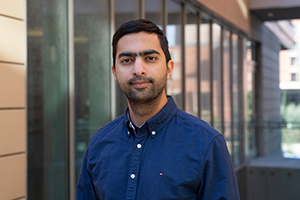
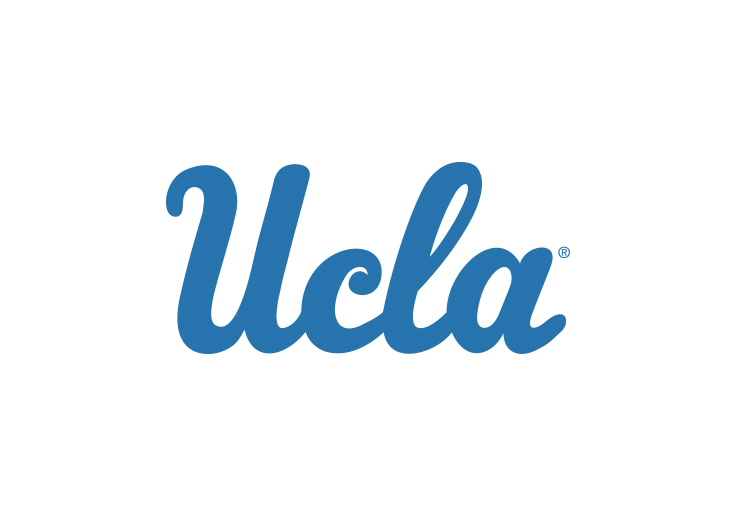
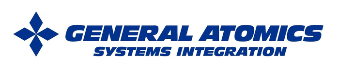
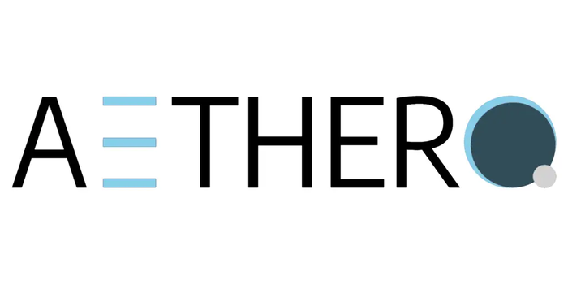

RESEARCH AREA 01
Radio Unit
Rahi
Skylark Wireless
Meet the academic investigators and industry collaborators shaping O²-RAN across four technical and integration teams.
Coordination and research across four complementary technical areas.
Johns Hopkins University
Skylark Wireless
Arizona State University
Clemson University
DASH Tech IC
Arizona State University

UCLA
University of Michigan
General Atomics
Aethero
Clemson University
Johns Hopkins University
Skylark Wireless
Team assignments follow the supplied consortium slide. Farshad Firouzi's current affiliation is shown as Johns Hopkins University, including within Use Case & Integration, per the project team's update.
Academic and industry organizations represented in the project team.

UCLA
General Atomics
AetheroThe organizational structure, member portraits and institutional logos are adapted from the team slide provided by the project. The slide lists Farshad Firouzi with an older ASU association in the integration group; his affiliation has been updated to Johns Hopkins University. Please confirm names, approved logos, current roles and portrait permissions before public launch.
← Return to homepage